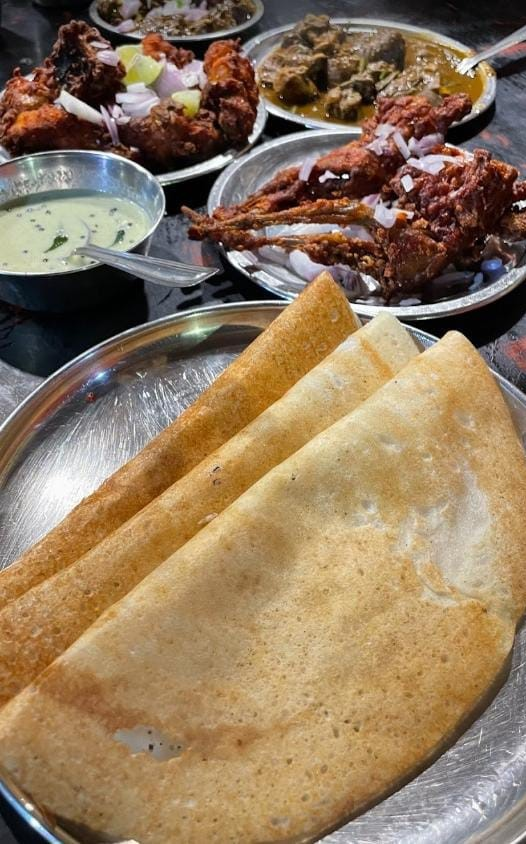
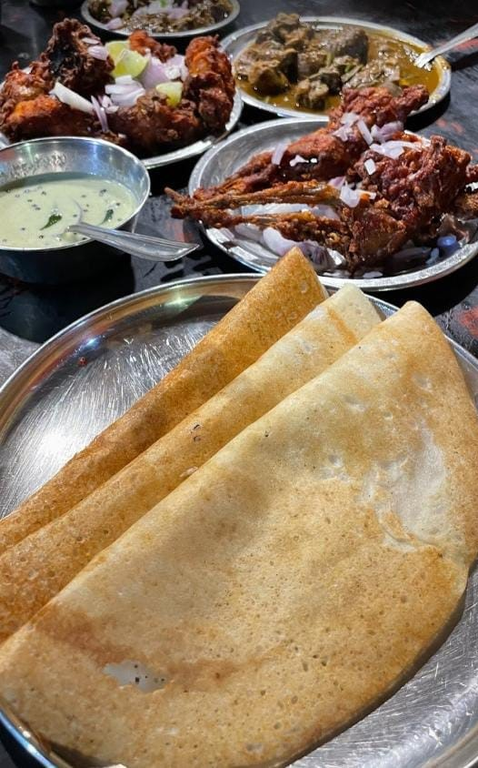

FOOD SPOTS
1.ibrayikka thattukada


IT'S A GEM AMONG OTHER FOOD SPOT.WE TAKING ABOUT"IBRAYIKKA'S TATTU KADA". IT'S A POPULAR STREET FOOD SPOT IN WAYANAD FOR HOME MADE TASTE IT'S LOCATED NEAR NEWMAN'S COLLEGE, MANANTHAVADY. LET US GET IN TO THE SPOT.......... IT'S A SMALL SETUP HOUSE TO MADE HOMELY FOOD WELL KNOWN AS HERE DOSA-CHATTINI,CHAMMANDHI WITH CHILLI GREEN,KAPPA, LEMON PICKLE WITH PEPPER.GHEE NICE AND HERE'S DELICIOUS TASTY FRIED SARTIDINES. PEOPLE ARE JUST COMING FOR THE BEST TASTY COMBINATION OF THE DOSA-CHATTINI_FRIED SARTIDINES MIX. WE DEFINITELY OFFER WE CAN TASTE THE SAME FOREVER FROM HERE.
location : NEWMAN'S COLLEGE, MANANTHAVADY, WAYANAD
2.sukuvetten chayakkda


THE SMALLEST TEASHOP IN KERALA. SUKUVETTEN' S TEASHOP IT FAMOUS FOR DAILY SNACKS LIKE POORI, DOSA, PUTTU..... IT' S A VERY SMALL BUT WITH GRASS WORKING MORE THAN 25 YEARS. THE TEA SHOP LOCATED AT CHEKADI, KURUVA ISLAND. SUKUVETTEN' S TEA SHOP GAVE US NOSTALGIC EXPERIENCE WITH GRASS HUT, SWEET SONY FROM OLD RADIO, RURAL VISUALS. SOMETIMES WILD ANIMALS WILL PASS NEAR THE SHOP. ITS A TASTY FOODS WITH DD EXPERIENCE.
location : palvelicham, chekadi,kuruva island, WAYANADkerala 670646,
3.kl-12 thattukda

 



MADE UP AMBIANCE GIVES SPECIAL PATH TO STOMACH. KL IS A NIGHT STREET FOOD SPOT WITH GOOD AMBIANCE. THERE HAVE MANY STREET FOOD SPOTS IN KALPETTA ,BUT THE SPOT KNOWN FOR BEST TEA SNACKS ,BEST CUSTOMER SERVICE, AND THE BEST CHICKEN STUFFING. CHICKE STUFFING IS MIXUP WHICH THEY PUT QUAIL EGGS IN THE FRIED CHICKEN AND ADD CASHUES, KISMIS. THEY PROVIDE COMBO OFFER OFCHICKEN STUFFING WITH TEN POROTTA FOR 500 RUPPES THE TABLE MADE UP WITH TIER AND GLASS, WOODEN WASH BASE, LIGHTEST AND COMBINATED SMELL OF HOT CHICKS GIVES ALTRA AMBIANCE.THE SPOT LOCATED AT KALPETTA NEAR EPLANET.
location :main town,kalpetta, WAYANAD, kerala pincode:673121
4.black wolf


A PERTECT PLACE TO DROP YOUR WORRIES AND FILLED WITH HAPPY VIBES. BLACK WOLF IS KNOWN FOR BANANA FRITTER WITH ROASTED BEEF. THE COMBINATION OF NICE BANANA FRITTER AND RED ROASTED BEEF GIVES US MOUTH WATERING EXPERIENCE THE SPOT HANDELED BY YOUNG BOYS. THEY PROVIDE MUST TASTABLE TEAS LIKE "MASALA TEA", VANILATEA, CHIKRI TEA, WITH KALLUMMAKKYA. THE SHOPE PROVIDES GOOD AMBIANCE WITH GRAFFITI.THE SPOT LOCATED AT KAITHAKKAL NEAR PANZONE HYPER MARKET.
location : kaithakkal,beside panzone hypermarket,mananthavady, kerala pincode:670645
5.dwaraka spot
.png)
.jpg)
.jpg)
.webp)
.jpg)
.jpg)
.jpg)
.jpg)
.jpg)
.jpg)
DWARAKA IS POPULAR FOR KALLUMMAKKAYA.AMONG THE KALLUMMAKKAYA THERE HAVE A NICE SPOT FOR "BOILED EGG INSIDE NEYPATHIL". IT'S A EVENING TEA SPOT FOR SNACKS WITH SMOKED TASTE. SPECIAL ITEM ("BOILED EGG INSIDE NEYPATHIL") GIVES EXTRA ENERGY TO FULLFIL STOMACH. THEIR OTHER SNACKS ARE IMPRESSIVE ALSO LIKE "PARIPPUVADA",BANANA FRITTER ETC... ITS ONLY AVALIABLE IN EVENING TIME,THAT MAKE THE SHOP CROWD WITH NEWGEN GUYS
location : dwaraka,mananthavady,WAYANAD, kerala pincode:670645